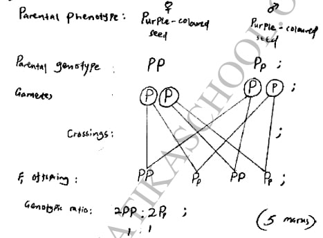
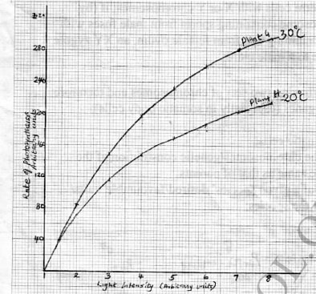

(a) Name the structures labelled E and F.
(ii) F ........................................................... ..
(ii) State the function of F. (1 mark)
With reference to the nucleus state one difference between an aniamal and a bacterlal cell.
(ii) responsible for intracellular digestion. (1 mark)
(c) State two main functions of the vacuole in the amoeba. (2 marks)
(a) Explain why more carbon (IV) oxide is transported in the form of bicarbonate ion.
(2 marks)
(b) Account for the high total plasma content of carbon (IV) oxide during exercises.
(3 marks)
(c) State how one’s involvement in the exercises affects blood pH. (2 marks)
(d) Name the protein responsible for the transport of carbon (IV) oxide in the blood.
(1 mark)
(a) Explain the appearance of the cell at the end of the treatment. (3 marks)
(b) Explain the results obtained if a red blood cell is subjected to the same treatment.
(3 marks)
(c) Explain why transfusion with distilled water is not recommended for a dehydrated
patient. (2 marks)
4. (a) Explain how the sex of a male child is determined in human beings. (2 marks)
(b) (i) Define the term diploidy. (l mark)
(ii) Name the type of cell division that gives rise to diploid cells. (l mark)
(iii) Name the type of cells in which the process named in (b) (ii) above occurs.
(1 mark)
(iv) State the significance of diploidy. (2 marks)
(c) Name the hormone responsible for the development of secondary sexual characteristics
in human males. (1 mark)
5. In beans, the gene for purple colour is dominant over the gene for White colour. A pure breeding bean plant with purple colour was crossed with a heterozygous bean plant.
(a) Using the letter P to represent the gene for purple colour, Work out the genotypic ratio of the offspring. (5 marks)
(b) State two advantages of using genetically modified varieties in bean farming. (2 marks)
(c) State how in-breeding leads to reduced hybrid vigour. (1 mark)
Answer question 6 (compulsory) and either question 7 or 8 in the spaces provided after question 8.
6. In an investigation, two potted plants G and H belonging to the same species were exposed to increasing light intensities at different temperatures, 30 “C and 20°C respectively. The rate of' h 'n the table below:
(a) On the same axis, plot graphs of rate of photosynthesis against light intensity for plants G and H (8 marks)
(c) Account for the difference in the rate of photosynthesis in the two plants. (3 marks)
(d) Account for the difference in the rate of photosynthesis in the two plants between the following light intensities:
(e) (i) Predict the rate of photosynthesis at light intensity of 16 units.(1 mark)
(f) State one internal and one extemal factor that could be limiting in the investigation.
(2 marks)
7. Explain the importance of protecting the forest ecosystem with reference to the following:(20 marks)
(e)pollution.
8. Describe how the mammalian eye is structurally adapted to its function. (20 marks)
1. The diagram below represents a nucleus.

(a) Name the structures labelled E and F.(2 marks)
(i) E- Nucleolus
F - Nuclear pore/nucleopore
(ii) State the function of F. (1 mark)
- Facilitates movement of materials in and out of the nucleus
(iii)With reference to the nucleus state one difference between an aniamal and a bacterlal cell. (1 mark)
- Nuclear material in the bacterial cell is not enclosed Within a membrane /prokaryotic, While in animal cell it is enclosed/ eukaryotic
(b) Name the plant cell organelle:
(i) That stores chlorophyll (1 mark)
- Chloroplast
(ii) responsible for intracellular digestion. (1 mark)
- Lysosome
(c) State two main functions of the vacuole in the amoeba. (2 marks)
(i) - Feeding (food vacuole)
(ii)- Osmoregulation (contractile vacuole);
(iii)- Excretion/removal of wastes
2.
(a) Explain why more carbon (IV) oxide is transported in the form of bicarbonate ion.
(2 marks)
- Presence of carbonic anhydrase enzyme; which speeds up the conversion of carbon (IV) oxide to weak carbonic acid; which dissociates into hydrogen carbonate ion/ (HCOE) (that diffuses out of the red blood cells into the blood plasma)
(b) Account for the high total plasma content of carbon (IV) oxide during exercises.
(3 marks)
- The body needs high amotmt of energy; (for the exercise/muscle activity) hence high respiration rate (more oxygen intake); releasing more carbon (IV) oxide (in the blood plasma)
(c) State how one’s involvement in the exercises affects blood pH. (2 marks)
- The high rate of respiration (during physical exercises coupled with normal cellular metabolism) results in the production of more carbon (IV) oxide/faster accumulation of lactic acid; lowering the blood plasma pH/making it more acidic (compared to when one is at rest)
(d) Name the protein responsible for the transport of carbon (IV) oxide in the blood.
(1 mark)
- Haemoglobin
3. The diagram below illustrates the appearance of a plant cell after it had been put in a certain solution.

(a) Explain the appearance of the cell at the end of the treatment. (3 marks)
- The cell is turgid; its cell sap was hypeitonic (compared to the solution in which it was placed); by osmosis, water moved into the cell across its cell semi-permeable membrane, (swelling and becoming turgid)
(b) Explain the results obtained if a red blood cell is subjected to the same treatment.
(3 marks)
- The red blood cell lacks the cell wall; water molecules move across its semi-permeable membrane by osmosis; into its hypertonic medimn (inside the cell),cell contents/cytoplasm swelling and bursting/ haemolyses
(c) Explain why transfusion with distilled water is not recommended for a dehydrated
patient. (2 marks)
- Would haemolyse; due to lowering of the osmotic pressure of the blood below normal
4. (a) Explain how the sex of a male child is determined in human beings. (2 marks)
- Male produces sperm cells with X or Y chromosomes; if (by chance), Y chromosome containing sperm from male fuses with X chromosome containing egg from female ovum, an XY zygote results, giving rise to a male child
(b) (i) Define the term diploidy. (l mark)
- State of being/having two sets of chromosomes and therefore two copies of genes (especially in somatic/body cells)
(ii) Name the type of cell division that gives rise to diploid cells. (l mark)
- Mitosis
(iii) Name the type of cells in which the process named in (b) (ii) above occurs.
(1 mark)
- Body cells/somatic cells
(iv) State the significance of diploidy. (2 marks)
- Ensures that the chr0mosomes/ genetic constitution of the offspring is the same as that of parents; Ensures perpetuation of a given species’ desired/favourable traits/ qualities/continuity of the species
(c) Name the hormone responsible for the development of secondary sexual characteristics
in human males. (1 mark)
- Testosterone
5. In beans, the gene for purple colour is dominant over the gene for White colour. A pure breeding bean plant with purple colour was crossed with a heterozygous bean plant.
(a) Using the letter P to represent the gene for purple colour, Work out the genotypic ratio of the offspring. (5 marks)

(b) State two advantages of using genetically modified varieties in bean farming. (2 marks)
- Higher yields
- Enhanced resistance to diseases/pests
- Early/faster maturity
- Enhanced resistance to harsh climatic conditions (drought/ extremes in temperature)
(c) State how in-breeding leads to reduced hybrid vigour. (1 mark)
- Chances of recessive/defective genes being combined increase, hence weaker offspring
Section B (40 marks)
Answer question 6 (compulsory) and either question 7 or 8 in the spaces provided after question 8.
6.
(a) On the same axis, plot graphs of rate of photosynthesis against light intensity for plants G and H (8 marks)

(b) State the aim of the investigation.(1 mark)
- To investigate/compare the effect of (varying) light intensity/ temperature on the rate of photosynthesis
(c) Account for the difference in the rate of photosynthesis in the two plants. (3 marks)
- Rate of photosynthesis is higher in plant G (than H); (Photosynthesis being an enzymatic process), enzymes were subjected to favourable/optimal temperatures (of 30°C); hence more activated, unlike in plant H where temperatures were lower (20°C);
(d) Account for the difference in the rate of photosynthesis in the two plants between the following light intensities:
(i) l—4 units (2 mark)
- units Rapid increase in rate of photosynthesis increases with the increase in light intensity; due to increase in light energy for photosynthesis/formation of more ATP molecules
(ii) 4—8 units.(2 mark)
- units Slower/ gradual increase in the rate of photosynthesis as the light intensity increases; because other factors become limiting/ some chlorophyll molecules start bleaching
(e) (i) Predict the rate of photosynthesis at light intensity of 16 units.(1 mark)
- Slight increase/no significant increase/remains constant
(ii) Give a reason for your answer in (e) (i) above.(1 mark)
- The optimum light intensity has been exceeded/some chlorophyll could be destroyed
(f) State one internal and one extemal factor that could be limiting in the investigation.
(2 marks)
- Internal factor - Chlorophyll/enzyme concentration
- External factor - Carbon (IV) oxide concentration/amount of water
7. Explain the importance of protecting the forest ecosystem with reference to the following:(20 marks)
(a)climate change
- Promote(regular) rainfal1/precipitation/prevent desertification
- Keeps biogeochemical cycles going e.g. hydrological, carbon
- Act as wind breakers
- Keep earth temperatures cool/reduce global warming; nitrogen, phosphorous, sulphur cycles
(b)biodiversity
- Conserve diverse flora/ fauna
- Conserve genetic variety
- Prevent extinction of rare species
- Source of research/employment
- Aesthetic/attracting tourism in foreign exchange
- Have impact on culture/religion/politics
- Food and shelter for other organisms and man
- Source of oxygen
(c)biotechnology
- Manufacture of medicines/directly used as medicinal
- Source of food/food products
- Provide fuel (when regulated)
- Provide paper and related by-products (When regulated)
- Provide timber (when regulated)
- Products used in other industries e.g. tannin, Wax, rubber, oil, honey
(d)water conservation
- Increased ground water/high water tables
- Adds into rivers-/lakes/permanency in existing Water bodies/ reservoirs
- Water towers/water catchment
(e)pollution.
- Minimize soil pollution/ensuring cover against surface run-off/ wind erosion/denudation
- Trees/vegetation clean the soil surface by absorbing nutrients from decomposed matter e. g. sewage
- Large scale clean-up of polluted air/dust
- Muflie noise pollution
8. Describe how the mammalian eye is structurally adapted to its function. (20 marks)
Has the eyelid - which protects the cornea from mechanicall physical/chemical damage
Eye lid - protects the eye from bright light by reflex action
Sclera/Sclerotic layer- which contains (inelastic) collagen fibres which protects/maintains shape of the eyeball
Cornea - transparent to allow light pass through/has convex shape to refract light towards the retina; Conjunctiva A (thin) epithelium for protection of cornea/has goblet cells for secretion of mucus for lubrication/ transparent to allow light pass through
Choroid/choroid layer - rich in blood vessels/highly vascularised, supplying the retina with nutrients/oXygen/ remove metabolic wastes/covered with (black) pigment cells to prevent reflection of light within the eye
Ciliary muscles - have (contractile) muscles that contract/relax to alter the shape of the lens during accommodation
Lens - transparent to allow light pass through/elastic to allow adjustment of the shape of lens/ biconvex to refract light/focus light onto retina;
Iris - has radial and circular muscles to alter diameter/size of the pupil, hence controlling the amount of light entering the eye/contain pigments that absorb light and stop it getting through to the retina
Vitreous homour - clear/transparent to allow light pass through/is a fluid that refracts light rays onto the retinaf maintain shape of the eye balls supports the eye
Retina - contains cones, rods/photoreceptors to perceive light
Optic nerve - has sensory neurons/nerve cells that transmit impulses to the brain
Fovea (centralis) - (most sensitive part of retina) contains numerous/high concentration of cones for visual acuity/ accurate vision
Pupil - a hole/an aperture/opening in the iris, lets in light
Suspensory ligaments - are fibrous/inelastic fibres that hold lens in position
Aqueous humour - is clear/transparent to allow light to pass through/is a fluid/liquid (exerting hydrostatic pressure) to maintain theshape of the eyeball/refract light rays onto the lens/comea/contain glucose for nourishment
Blind spot - a point where the optic nerve leaves the eye to the brain/passage of blood vessels since has no photoreceptors